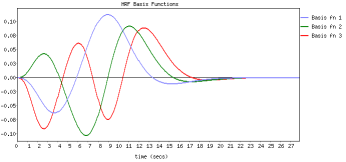
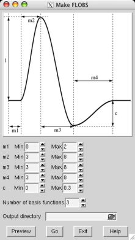

Research Overview
 FLOBS ( FMRIB's Linear Optimal Basis Sets ) is a toolkit based around the idea of generating optimal basis sets for use in HRF convolution in FMRI linear modelling such as in FEAT. It allows the specification of sensible ranges for various HRF-controlling parameters (delays and heights for the different parts of the HRF "curve"), generates lots of example HRFs where each timing/height parameter is randomly sampled from the range specified, and then uses PCA to generate an optimal basis set that maximally "spans the space" of the generated samples.
It is easy to tell FEAT to use a FLOBS-generated basis set; either use the Make_flobs GUI or use the default FLOBS basis set supplied with FSL. Just select the optimal/custom HRF convolution option in the FEAT model setup.
It is also possible to use filmbabe instead of the normal FEAT timeseries analysis (which uses the FILM program). The difference is that filmbabe re-projects the optimal basis set onto the original complete set of samples so that it can learn priors on the expected means and covariances of the individual basis functions. This is so that these priors can then be used when fitting the model to the data, which means that the basis set is restricted from creating implausible HRF shapes. This means that the noise is less "randomly fit" by the model, giving better separation between the null part of the final statistics map and the activation part, i.e. better activation modelling power. Beware: note that the filmbabe program itself is a relatively untested (beta release) program!
For more detail on FLOBS see M.W. Woolrich, T.E.J. Behrens, and S.M. Smith. Constrained linear basis sets for HRF modelling using Variational Bayes. NeuroImage, 21:4(1748-1761) 2004 and a related technical report TR04MW2.
Make_flobs
 You can create your own optimal basis set using the Make_flobs GUI; either type Make_flobs from the command line, or find it under the Utils button in the FEAT GUI. The GUI is fairly self-explanatory; using the figure that appears, showing the HRF and its different controlling parameters (time widths set in seconds and the height parameter relative to the main peak height, which is set at 1), set the range you wish for each parameter. Press Preview and the basis set will be generated (with a reduced number of samples for speed), popping up a web browser window with the results, typically in a minute or less. The eigenvalues plot shows the eigenvalues for the most important basis functions which explain 99.5% of the variance. This might help you to refine your choice of the number of basis functions to use.
Now select an output directory name for the basis function information to get saved into (e.g. /Users/karl/my_basis_set.flobs) and press Go. Now the full number of samples will be generated and all necessary data (primarily the basis functions and their means and covariances when re-projected back onto the samples) will get saved for use in FEAT or in filmbabe.
If you are using the basis set inside FEAT, just select the optimal/custom HRF convolution option in the FEAT model setup GUI (for ALL relevant EVs!) and use the adjacent file browser button to change the default FLOBS directory to the one you have just created (again, you must do this for ALL relevant EVs).
filmbabe
If you want to try the filmbabe program (don't forget it's a beta release which hasn't been heavily tested yet!) then you should do the following:
- Read the paper or techrep linked to above.
Create your optimal basis set using Make_flobs.
- Run FEAT as normal, using this new basis set.
Use filmbabescript as an easy way to run filmbabe, carry out inference (thresholding) and generate a web-page report. The usage is:
filmbabescript <feat_directory> <flobs_directory>
Note that the stats output from filmbabe does not follow a simple understood null-distribution (in the null case) so the standard methods for thresholding (like those currently used in FEAT) are not valid. Therefore filmbabescript makes use of the mm spatial mixture modelling program, which explicitly models both the null and the activation parts of the final stats image, allowing valid inference.